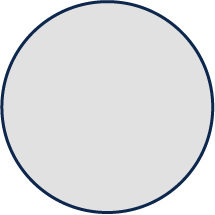
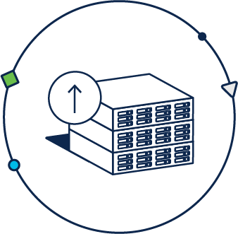
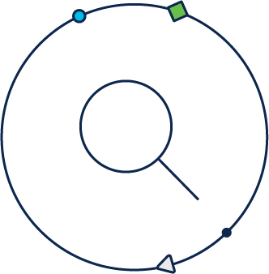
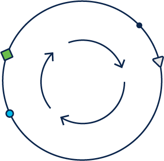
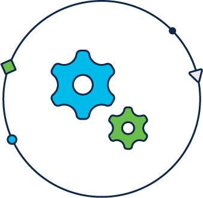

Amplify the capabilities of your existing Cisco UCS tools
to take infrastructure management to the next level


Level Up UCS management
Extend UCS operations to Cisco Intersight Infrastructure Service

View all infrastructure and scale operations
Level Up visibility and control
View all infrastructure and scale operations
from one place

Apply global policies with common
Level Up UCS and HyperFlex deployment
Apply global policies with common
templates and configuration

Level Up security remediation
Identify potential vulnerabilities and get
recommended remediation

Automate troubleshooting processes and